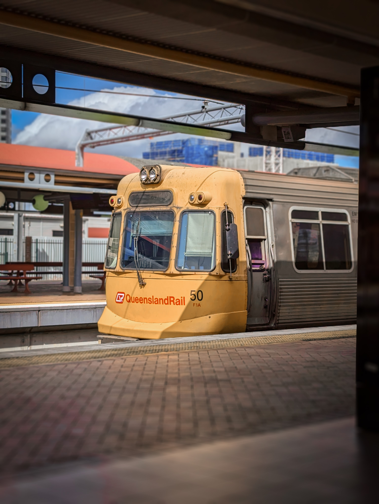
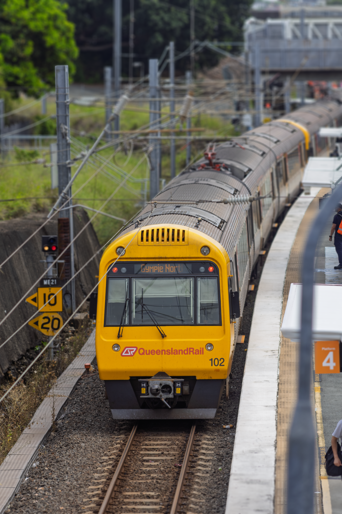
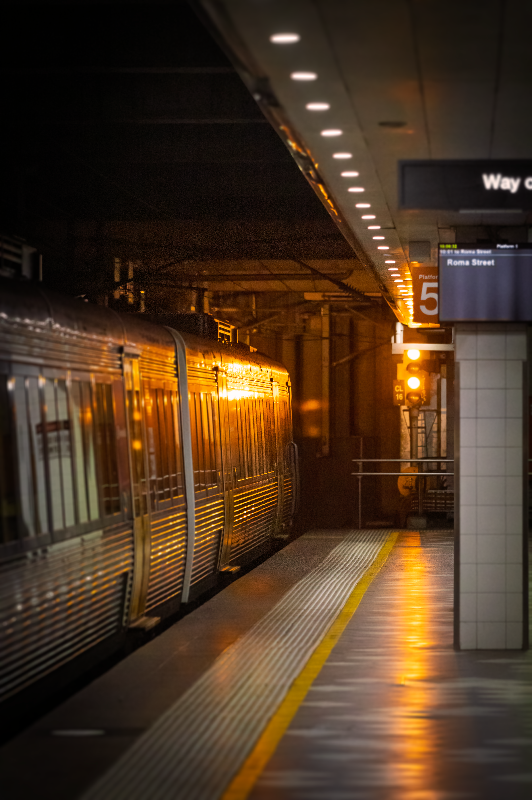
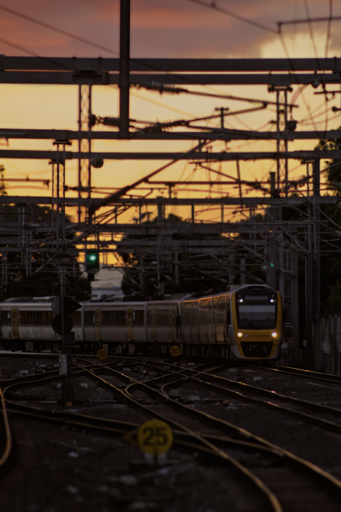
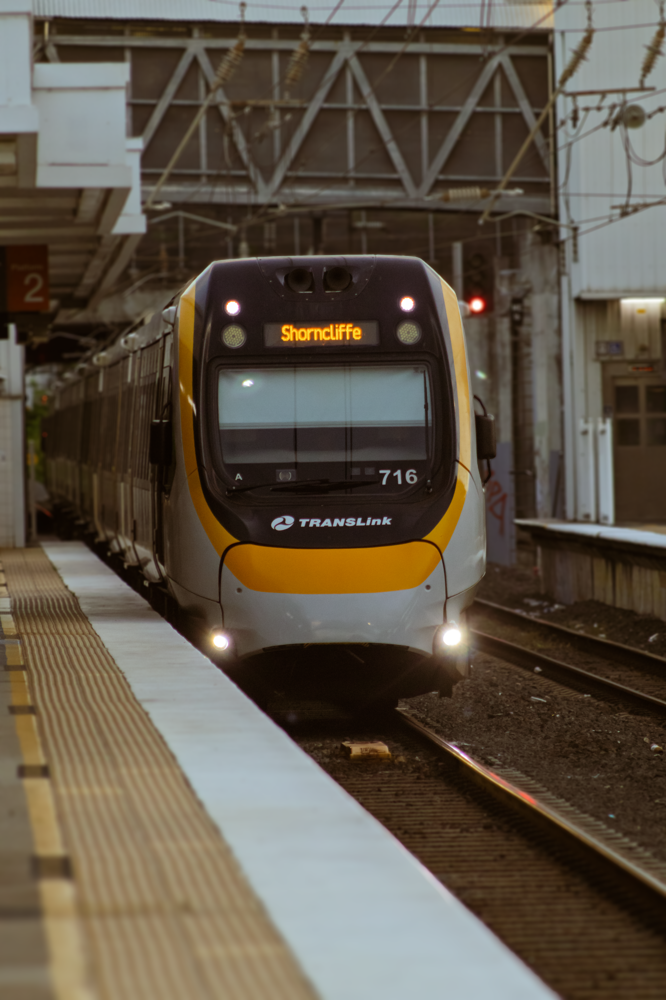
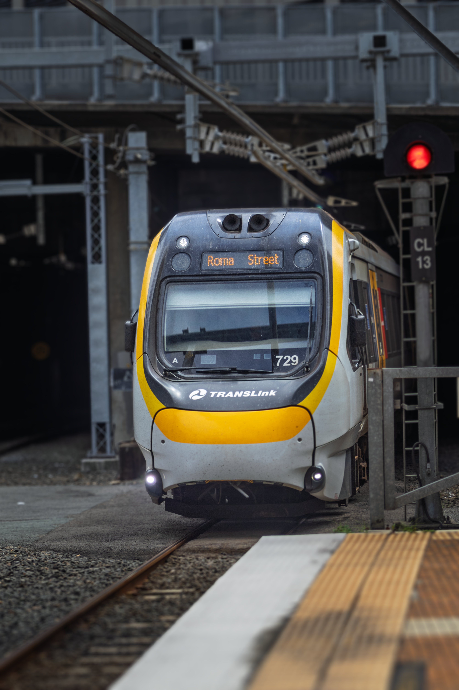
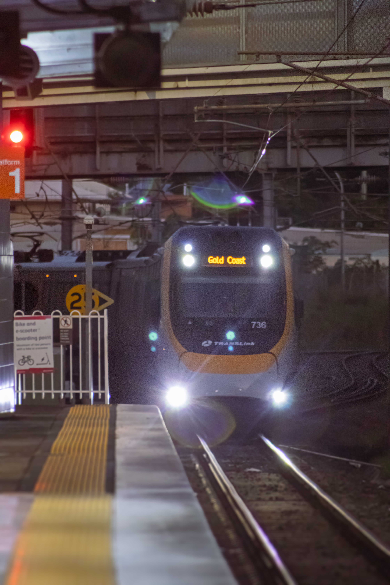

My Train Photos¶
Here is a selection of some of my train photos that I think are nice, in no particular order (apart from the categories). There also might be some other ones that I took on the individual train pages, like that one taken @ Darra on the EMU page.
EMUs¶

EMU50 (3 car) departing Roma St Platform 6, operating Boggo Road / Park Road (BRBR) service. Run JS06.
{kind=link}

EMU53 at Darra Station, Platform 1, operating BRIP (Brisbane City - Ipswich) service. Run 1554. Taken 28/12/24 @ 18:59.

EMU57/50 arriving at South Brisbane station, platform 2, operating BNFG (Beenleigh to Ferny Grove) service. Run 1EC1. Taken 06/12/24 @ 18:05.
IMUs¶
IMU100s¶

IMU102 departs from Bowen Hills station, platform 4, operating the BRGY (Gympie North) service. Run T401. Taken 05/12/24 @ 09:42.
{kind=link}
IMU160s¶

IMU173 and 182 arriving at Fortitude Valley platform 4, running BRCA Caboolture service. Run 1153. Taken 20/02/25 @ 18:56.

IMU183, departs from Central Station, platform 5, operating RPBR (Roma Street) service. Run T956. Taken 05/12/24 @ 10:04.
{kind=link}
SMUs¶
SMU220s¶

SMU 243 crossing a rail bridge (5R4JCWHR+V9W), operating BRIP (Ipswich) Roma Street service. Run 1957. Taken 12/28/24 @ 18:32.
{kind=link}
SMU260s¶

SMU263 heading to Milton just south of Toombul. Taken 08/02/24 @ 18:50.
{kind=link}

SMU280 arriving at Eagle Junction station, platform 4, operating SPCA (Springfield Central - Caboolture) service. Run T149. Taken 06/12/24 @ 18:35.
{kind=link}
NGRs¶

An NGR crossing the rail bridge over the North Pine River, operating RPSP (Redcliffe Peninsula - Springfield Central) service. Run DK46. Taken 31/12/24 @ 14:46. PXGJ+3J Lawnton QLD.
{kind=link}

NGR716 arriving at Bowen Hills station, platform 2, operating CLSH (Shorncliffe) service. Run DA85. Taken 06/12/24 @ 18:22.
{kind=link}

NGR729, arriving at Central Station, operating Roma Street (BRBR?) service.
{kind=link}

NGR736 arriving at Eagle Junction station, platform 1, operating BDVL (Brisbane Airport - Varsity Lakes) service. Run DG78. Taken 06/12/24 @ 18:49.
{kind=link}

NGR774 arriving at Eagle Junction station, heading towards Redcliffe.
Other¶

The Diesel Tilt Train at Roma Street as seen from the viewing platform. Taken 01/20/25 @ 15:03.

The Electric Tilt Train passing through Central Station, platform 5. Taken 05/12/24 @ 10:06.

The Electric Tilt Train arriving at Caboolture Station, platform 1, for the almost-daily Q301 service to Rockhampton. Taken 01/21/25 @ 11:51.

PN002 heading north on the down main, passing Fortitude Valley Platform 4. Taken 20/02/25 @ 18:53.